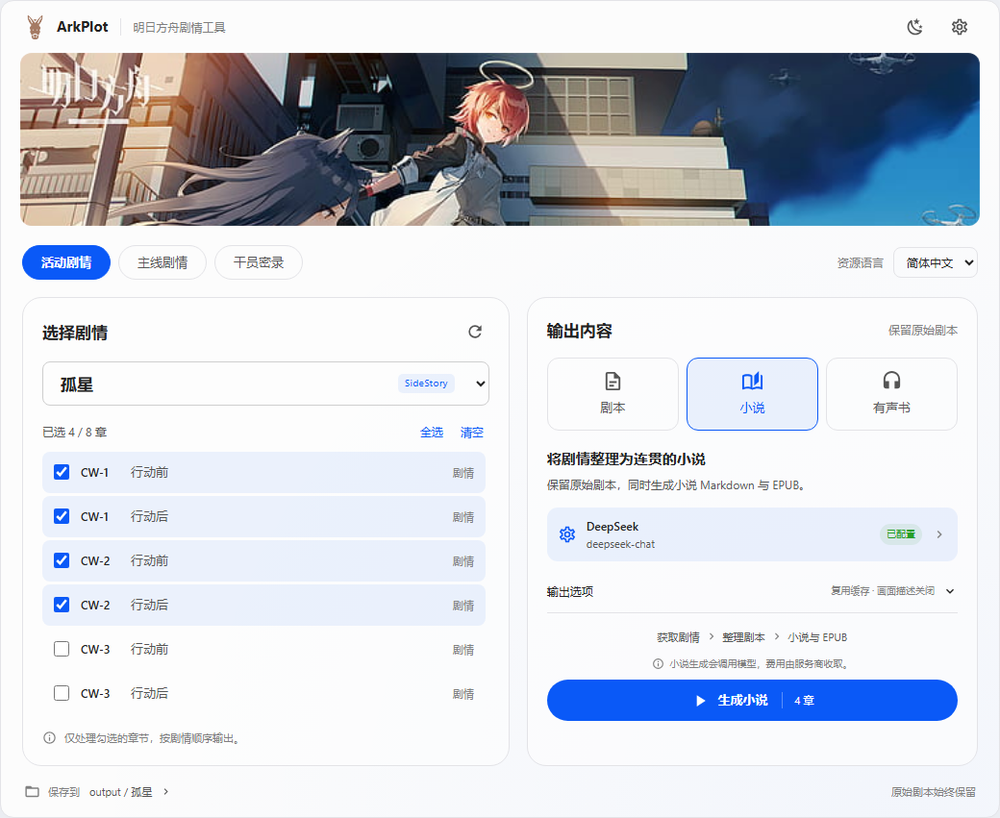
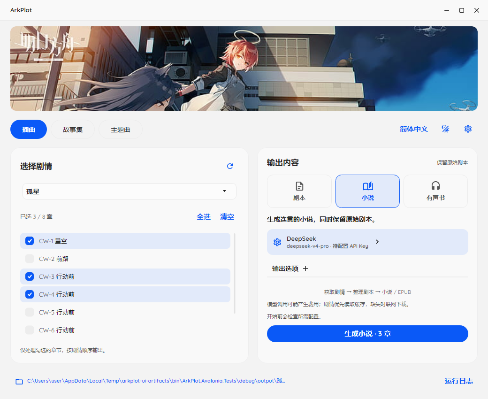
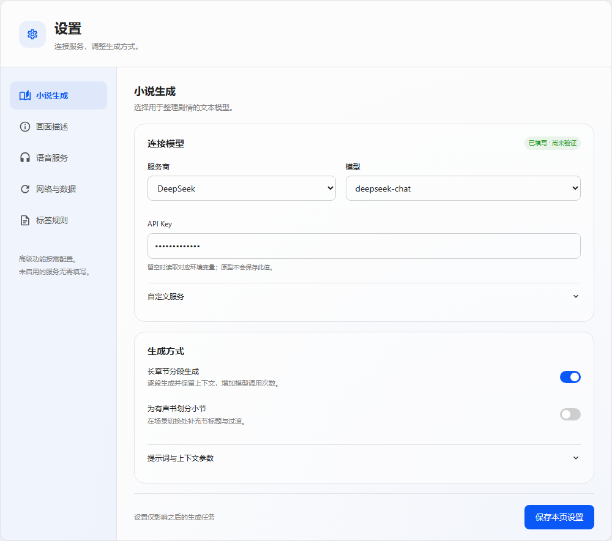
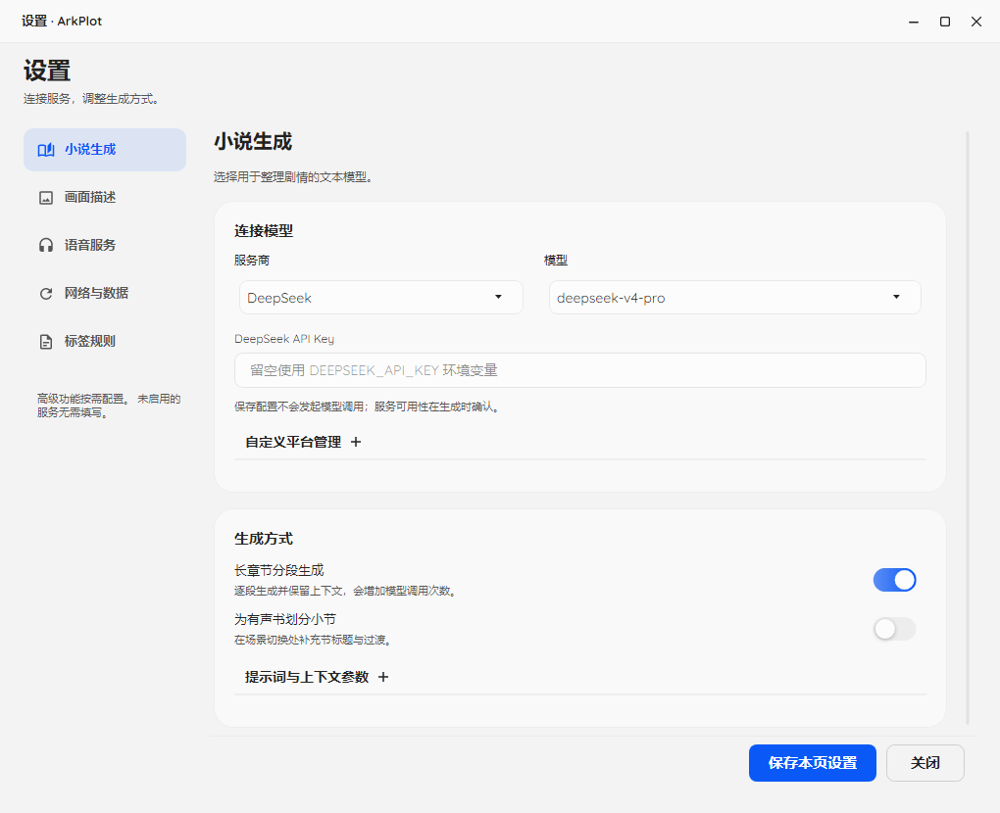
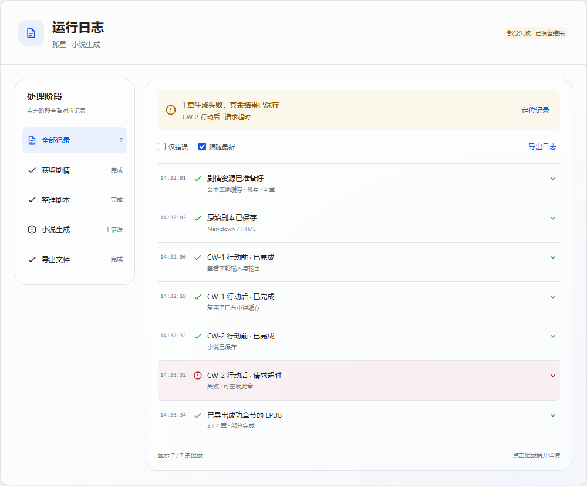
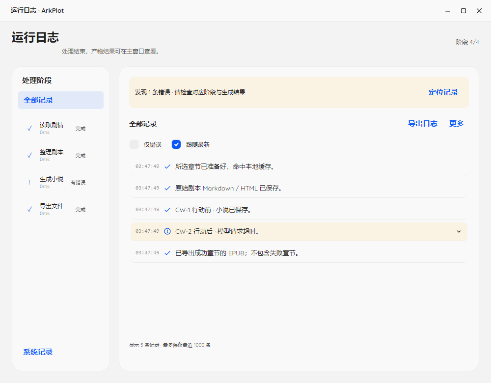

<!doctype html><meta charset="utf-8"><title>HTML 与 Avalonia 对照</title><style>body{margin:0;background:#e9edf2;font:16px Segoe UI}section{display:grid;grid-template-columns:1fr 1fr;gap:20px;padding:20px}img{width:100%;height:auto}h2{font-size:18px;margin:0 0 10px}</style><section id="main"><div><h2>HTML · main</h2></div><div><h2>Avalonia · main</h2></div></section><section id="settings"><div><h2>HTML · settings</h2></div><div><h2>Avalonia · settings</h2></div></section><section id="logs"><div><h2>HTML · logs</h2></div><div><h2>Avalonia · logs</h2></div></section>